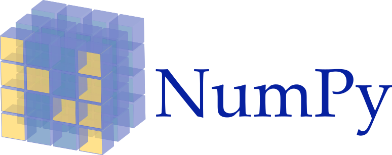

Продвинутый Python
Ссылки
- NumPy – библиотека с открытым исходным кодом для языка программирования Python.

- pandas – программная библиотека на языке Python для обработки и анализа данных.
Работа pandas с данными строится поверх библиотеки NumPy, являющейся инструментом более низкого уровня. Предоставляет специальные структуры данных и операции для манипулирования числовыми таблицами и временны́ми рядами. Название библиотеки происходит от эконометрического термина «панельные данные», используемого для описания многомерных структурированных наборов информации.

- Jupyter Notebook, изначально
IPython Notebooks

- PyQt – набор расширений («привязок») графического фреймворка Qt для языка программирования Python, выполненный в виде расширения Python.

- Flask by Example,
Introduction to Python, Pandas and SQLAlchemy,
SQL Data Types,
Column and Data Types,
Object Relational Tutorial
- Python REST APIs With Flask, Connexion, and SQLAlchemy
- Flask SQLAlchemy Tutorial, Flask-SQLAlchemy, SQLAlchemy in Flask, Form Validation with WTForms
- Как подружить Python и базы данных SQL. Подробное руководство
- Tags: Database schemas
- Unidecode, Python Slugify